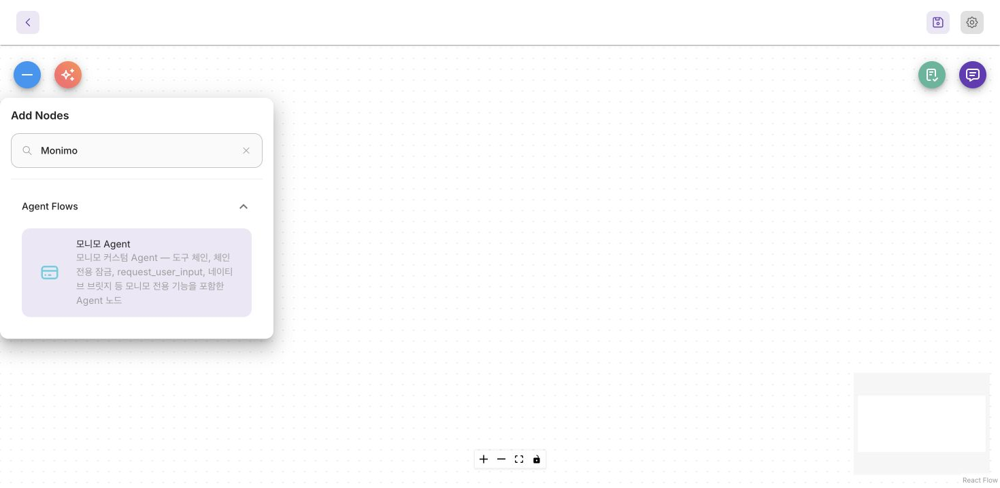

GenOS에서는 플로우 작성자가 에이전트의 기능, 승인 단계, 도구 간 값 전달 방식을 정합니다. genos-chain은 다음 실행 단계를 정하고, genos-vault는 값을 참조로 전달하며, genos-slots는 절차를 시작하는 데 필요한 입력을 모읍니다. 각각 따로 사용할 수 있고, 함께 사용하더라도 각 기능의 규칙은 구분해야 합니다.
이 가이드는 2026년 10월 16일 확인한 project/monimo/v1.9.3.4의 커밋 7936b3166da1127a1e9e9161ed89efb4a8abbfbd를 기준으로 합니다. 소스 코드의 동작을 설명하므로, 이전 이미지가 배포된 환경에서는 다르게 동작할 수 있습니다. 기준 소스 보기.
| 필요한 작업 | 사용할 기능 | 결정과 실행 방식 |
|---|---|---|
| 조회 후 확인 카드를 보여주고, 선택한 순서로 특정 도구 호출 | genos-chain | 도구가 다음 단계를 선언하고 서버가 실행 |
| 실행 중인 모델에 원문을 주지 않고 저장 객체 reference를 다른 도구로 전달 | genos-vault | 도구가 저장할 값을 선언하고 서버가 필요한 시점에 복원 |
| 계좌와 금액을 모아 검증한 뒤 입구도구 실행 허용 | genos-slots | 에이전트가 값을 수집·확정하고 서버가 검증 근거와 실행 잠금을 관리 |
프롬프트, 실행 경로, 업무 규칙, 화면 표현은 작성자가 정합니다. 아래에서는 현재 코드의 동작과 아직 수정이 필요한 차이를 구분합니다. 편의를 위한 처리도 작성자의 플로우를 조용히 바꾸어서는 안 됩니다.
데모는 가상 데이터로 아래 규칙을 재현합니다. 실제 도구 호출, 송금, 설정 변경은 일어나지 않습니다. 기능을 익히기 위한 예제이며, 실제 GenOS 실행 환경이나 출시 검증을 대신하지 않습니다.
공통 준비 화면
워크플로우 캔버스의 ＋ → Agent Flows → 모니모 Agent를 찾으세요. 영어 이름이 Agent인 일반 노드와 구분합니다. 캔버스에 배치한 노드는 더블클릭해서 엽니다.

확인할 항목: 이름은 모니모 Agent, 설명에는 도구 체인·체인 전용 잠금·request_user_input·네이티브 브릿지가 표시됩니다.
각 기능은 설정 화면 → 데모 → 선언 예제 순서로 읽으세요. 아래 기술 사양과 주의사항은 필요할 때 펼칠 수 있습니다. 화면은 2026년 10월 13일 로컬 QA에서 촬영했으며 설정명은 기준 브랜치와 대조했습니다. 모니모 Agent 0, CUSTOMER, DemoTransfer는 촬영용 예제이고, 변경한 초안은 워크플로우나 전역 설정에 저장하지 않았습니다.
이 사이트의 범위와 읽는 순서
Flowise·MonimoAgent 커스터마이징을 다룹니다. 일반 Flowise 기능 전체 설명이나 FAM·관리자·포털 제품의 변경 내역은 포함하지 않습니다. 기본 Agent와 모니모 Agent의 동작을 구분하세요. Monimo 전용 옵션이 일반 Agent에도 똑같이 적용되는 것은 아닙니다.
문서 기준과 변경 추적
기준은 2026년 10월 16일 project/monimo/v1.9.3.4의 커밋 7936b3166da1127a1e9e9161ed89efb4a8abbfbd입니다. 변경 집계의 시작점은 이전 Monimo v1.9.3.2와의 공통 조상 fa4b2a5478bf93584fd499d31abc4e7bcc3ea114입니다. 시작점 이전에 상속된 기능은 이해를 위한 설명에는 등장할 수 있지만 새 변경 수에 포함하지 않습니다.
전체 변경 색인은 이 구간의 Flowise 파일 715개와 Flowise 경로에 영향을 준 커밋 790개를 열거합니다. 커밋에는 병합·수정·되돌림·테스트도 포함됩니다. 커밋 수는 기능 수가 아니며, 중간 커밋의 동작이 최종 동작이라는 뜻도 아닙니다. 현재 동작은 최종 소스와 기능별 명세를 확인하세요.
기존 화면은 2026년 10월 13일 로컬 UI에서 촬영했습니다. 화면 이름을 찾는 데 사용하되, 이후 추가된 옵션의 현재 명세는 설정 사전을 따르세요. 세 데모는 합성 데이터로 핵심 동작을 설명하며 실제 업무 호출을 하지 않습니다.